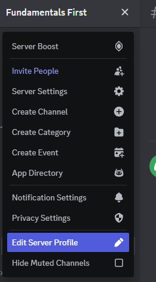

Page 3 of 6 - Discord
Many tech companies make use of a chat app called Slack. Although Discord is not the same thing, it's very similar, and most importantly, free!
We're going to use Discord at AcquirEdge for a lot of our coursework, so it's a key part of the setup process. You'll get announcements, Zoom Links, and be able to set up 1-on-1 coaching meetings through the links we will post on Discord.
Create an Account
If you don't already have an account, you can sign up for one here
If you do already have a Discord account, you can move on to the next step.
Get the app 💻
First, download the Discord desktop application. Even though there is a web app, it's not very convenient and notifications can get lost, so install the desktop application.
Download and install Discord from their offical downloads page.
Once Discord is installed on your machine, open it and create an account if you have not already. Then, join the class discord server using this link.
Initially, you won't see much in the server because you haven't yet been assigned your class role. After you set up your GitHub profile in the next step, we'll come back to this.
Create a proper profile 🧑💻
We need to get you know you better! One of the nice features about Discord is you can create a profile specifically for our class server. Navigate to our class server, and click the dropdown at the top. Then click "Edit Server Profile".

For your "Server Nickname", provide your full name so instructors know who you are.
Sign into the iOS or Android App 📱
In professional technical work, communication is key! Sometimes things happen and you aren't able to get to a computer. The same goes for our classes at AcquirEdge. It's important to be able to message us in case you can't make it due to an emergency.
- Find the Discord App in the App Store or Google Play Store.
- Install Discord on your Phone.
- Log into your account, and make sure to turn on notifications for Discord!
Double Check ✔️✔️
- [x] You installed the Discord App on your computer.
- [x] You created an account and joined the class Discord Server.
- [x] You set your server profile to your Full Name.
- [x] You installed Discord on your smartphone and turned on notifications.
Continue to GitHub Account Setup ➡️
With your Discord Profile set, continue to create or update your GitHub profile 🤓 so we can get you started with your solutions repository.